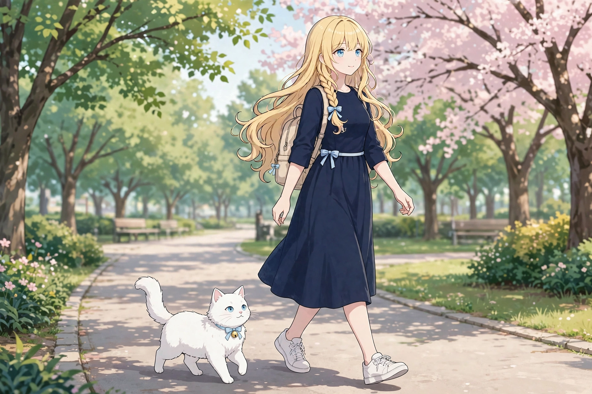

歩きやすい靴と疲れにくいバッグの選び方（40代）

セラフィナ：先に結論です。歩きやすさは「軽さ」「かかとの安定」「バッグは両肩で持てる形」の3点で決まります。姿勢の仕事をしてきた立場から言うと、靴とバッグは服より先に姿勢へ響きます。この記事の商品は、この3点に合うものだけを先に並べます。
この記事の商品（先に比較）
| 商品 | 価格（税込） | お店 |
|---|---|---|
| アーノルドパーマー スニーカー レディース 歩きやすい 疲れない 軽量 ローカッ | 3,370円 | はきもの広場 |
| スニーカー レディース 厚底 軽量 歩きやすい ウォーキングシューズ スリッポン | 3,120円 | anderis 暮らしの店 |
| リュック レディース 10ポケット 軽量 小さめ GRADE 通勤 大人 バッグ | 2,990円 | The Perfect Sports |
目安1：靴は軽さとかかとの安定
重い靴は歩幅が小さくなり、猫背を助長します。片足300g前後の軽さと、かかとがしっかり包まれる形が目安です。
目安2：バッグは両肩で持てる形
片側だけで重いバッグを持つと、肩が下がって姿勢が崩れます。リュックや2wayで、左右の負担を均等にしてください。
目安3：サイズは夕方に合わせる
足は夕方にむくみます。靴選びは夕方の試着が基本で、つま先に1cmほどの余裕があることが目安です。
あえて推さないもの
- 底が平らで薄すぎる靴（長く歩くと疲れます）
- 片肩だけの大きなトート（姿勢が傾きます）
- ヒールが高くてかかとが浮く靴（歩き方が崩れます）
この記事の目安に合う商品
特徴：軽量のウォーキングスニーカーと、小さめリュックに絞りました。
PR：この記事のテーマに合う靴とバッグ（PR）


あわせて読みたい：靴・バッグ種類別ガイド／姿勢のトレーニング